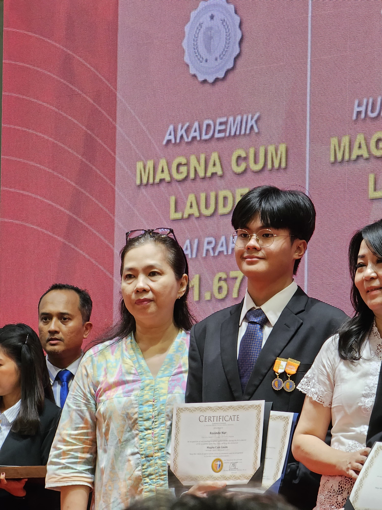
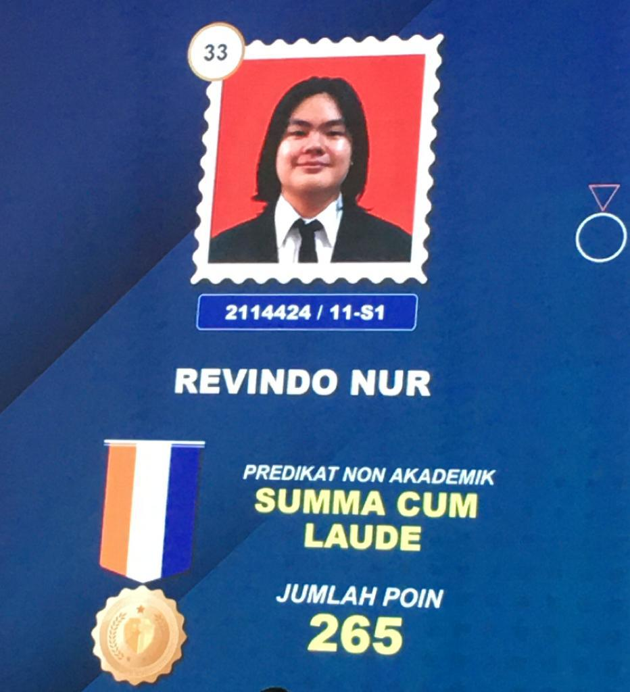

A Digital Business Innovation Double Degree student at BINUS University with a sharp focus on Data Analytics. I specialize in bridging the gap between business strategy and technical execution, transforming complex datasets into actionable narratives. Interested in Python, SQL (MySQL & Oracle), and Power BI, I empower teams to make better, informed decisions through data-driven insights. Beyond the numbers, my role as an Algorithm Lab Assistant has sharpened my ability to simplify technical concepts and mentor others toward innovation. I am driven by the belief that technology is a force for sustainable growth, and I am currently looking for opportunities to apply my skills as a Data Analyst.
Bina Nusantara University
Bina Nusantara Futsal Student Activity Unit
Cathedral Church Jakarta
Cathedral Cup IV
Analyzed over 7.1 million rows from the "Two Centuries of UM Races" dataset using Python. Focused on 50km & 50mi USA races in 2020, performing full data cleaning, feature engineering (athlete age, race season), and exploratory data analysis. Key insights include speed distribution by gender, age vs. performance trends, and seasonal performance differences.
2024 — Present
2021 — 2024
Issued by: Microsoft
Date: Feb 2026
This learning journey has helped me strengthen my understanding of the integration between business intelligence and AI-driven automation. Throughout the course, I gained hands-on experience in transforming raw data into actionable intelligence with Power BI and building intelligent chatbots with Power Virtual Agents to enhance digital user experiences."
View Certificate →Issued by: Udemy
Date: Jan 2026
This learning journey has helped me strengthen my understanding of the end-to-end data analysis process especially with Python (Pandas and NumPy). Throughout the course, I gained hands-on experience in Data Gathering, Data Cleaning, Data Preprocessing, Data Manipulation, Data Visualization
View Certificate →
Achieved average 91.67

Achieved 250+ points for non-academic appreciation
Recognized for analysis of "The Effects of Distance Learning on the Intensity of Stress of Canisius College Junior High School Students' Parents in the 2020/2021 Academic Year"
View Research PaperLeave a note, share your thoughts, or just say hi! 👋
✏️ Be the first to leave a message!